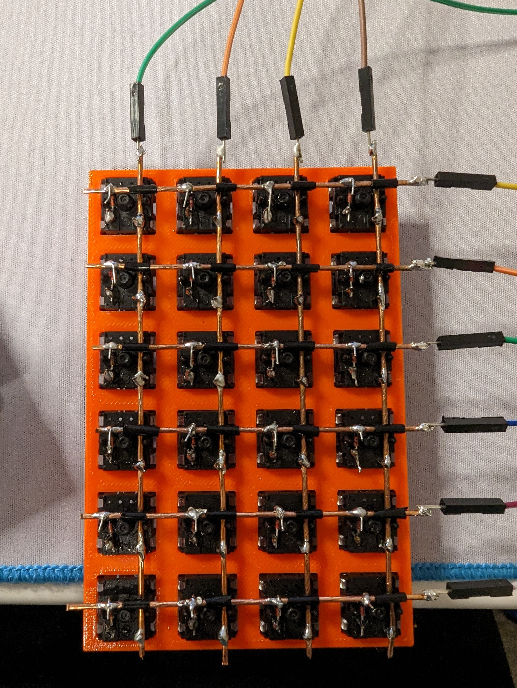
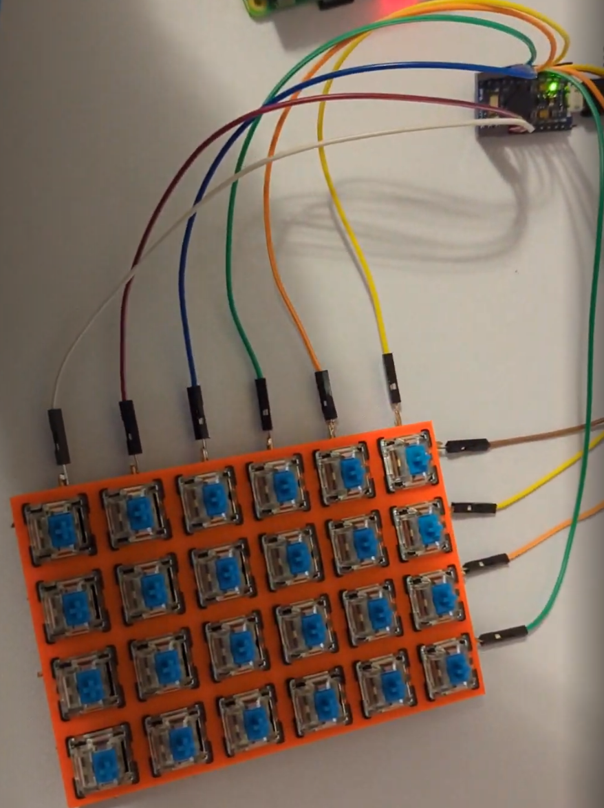
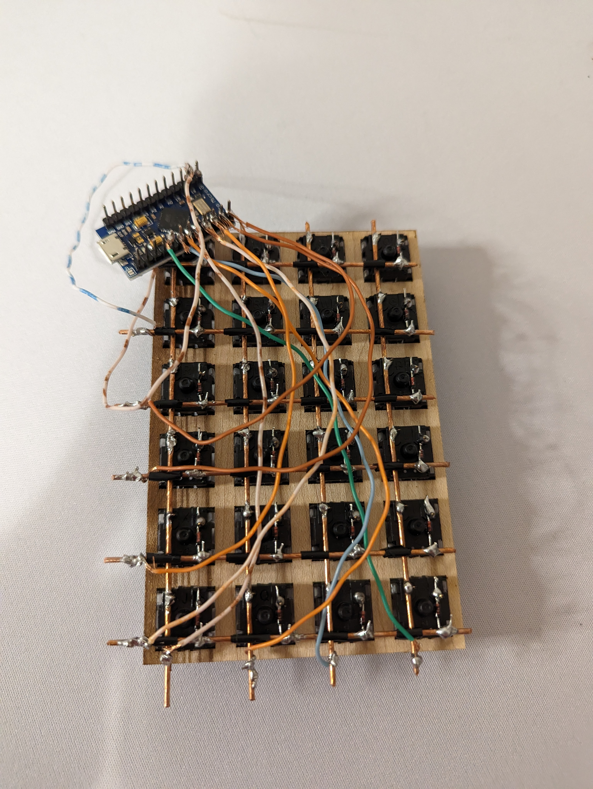
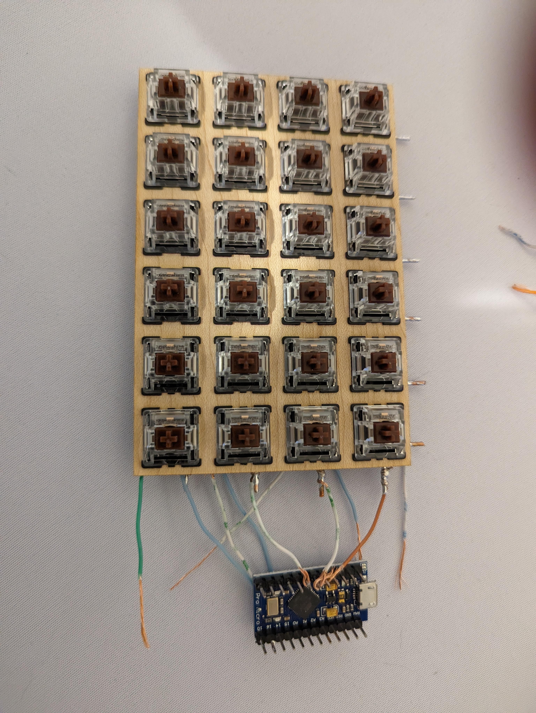
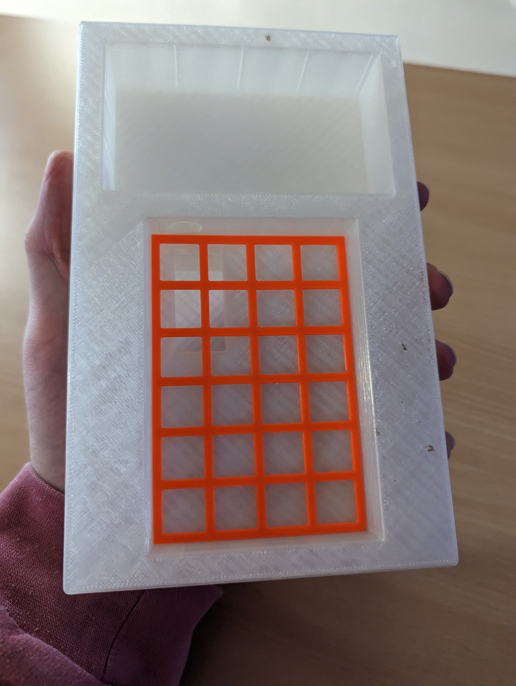

Orion
Andrews
Andrews
The
Design
4
Design
4
The design of the hardware for my calculator.
Hardware Continued
So to step back and reflect on where I am at in this point
in the timeline: I had written the software necessary to
perform the arithmetic you would expect of a scientific
calculator and the graphing of a normal graphing calculator,
I had created the hardware arrangement necessary to create a
closed interface between my compute unit and screen, as well
as created a keymap and a prototype design of a keyboard for
my calculator. Now, I was moving onto a more fleshed out
keyboard design.
The first thing I wanted to improve over my 3x3 keyboard
prototype was the soldering between the keyboard controller
and the keyboard. My diode and copper wire solders were
pretty decent, but the connections to the GPIO pins of my
Arduino were atrocious. I figured that the cleanest way to
improve would be to use jumper cables that slide right onto
the GPIO headers I had installed. This would also make
debugging easier in the event of a misplace wire.
I also wanted to scale this up to a 6x4 design, which as you can see in the next image, I did.
I also wanted to scale this up to a 6x4 design, which as you can see in the next image, I did.


As you can see here, the soldering is much neater and while the jumper cable connections to the copper are garbage, they are secure. You can also see that the connections into the Arduino are much cleaner. Here I made my first prototype of the keymap I would use for my design exhibition. It was really simple with numbers, arithmetic operators, graph and function input buttons, and some constants. I made sure to leave room for mod buttons that would allow access to other layers and functions.
This was also when I realized that the connections I made from the Arduino to the copper rows and columns did not need to be at the ends, they could be anywhere along a row or column. This was incredibly important as it would allow me to cut down on the overall form factor of the keyboard in the final build.
This was also the time when I got a special delivery. I had
looked around a few weeks earlier on the internet for some
low profile keyswitches and keycaps and found that they were
a semi-common thing. They arrived and were exactly what I
wanted them to be, but before I made a final keyboard with
the new switches, I wanted to test another method of wiring
to the Arduino that I thought could save some space.


The wiring may look like an affront to some deity, but it serves to demonstrate an idea that I was toying with. By measuring cables to more specific lengths and cutting down on excess, I could further improve the form factor of the keyboard. As you can see from the second image, the connections take up no more space than the copper wires themselves do. Now, from looking at this, you might think I lied about my discovery that the wires to the Arduino can be connected anywhere along the rows or columns as I connect these wires to the ends still, but that is not the case, I was simply using a flimsier wire (a dissected Cat 5 ethernet cable) and so I wanted to be able to wrap it around the wire for more stability while soldering, something that is hard to do in the middle of the copper wires.
And now we come to the final keyboard build. I placed the
switches into a switchplate with some keycaps on just to
test the general fitting and realized that there was a gap
of about 2mm between each switch. That would add up when
there were 6 rows and 4 columns. I created a new CAD design
of a switchplate to implement the new dimensions and printed
it to test the switches. The switche fit flushly and so I
ran with the new dimensions and created a new wood
switchplate in Illustrator. The switches fit very well into
the wood as well though there was quite a bow to the wood. I
will admit that this is when I made a bit of a mistake. I
put the switches into the keyboard such that the outer one
were able to come out. The wood bent away from the center
switches. This meant that though I had planned to use the
copper wires to add stabilitiy and prevent switches from
falling out, it was not nearly as effective as the copper
added constraining force in the direction of the bow rather
than opposite the bow. This small oopsie is really the only
thing that truly bothers me about the whole design of that
calculator prototype.
I now had the copper placed in and I soldered all of the switches to their respective columns, tinned the switches for their diodes, soldered the diode, taped the rows, and finally soldered the diodes to the rows. I trimmed the copper down so that there was no excess past the form factor of the switchplate. Next came probably the most important decision: how to wire from the keyboard to the Arduino. I will take a pause in the keyboard department here as the final decision of how to wire the keyboard to the Arduino is almost entirely dependant on the case design I had been doing for several weeks now.
I now had the copper placed in and I soldered all of the switches to their respective columns, tinned the switches for their diodes, soldered the diode, taped the rows, and finally soldered the diodes to the rows. I trimmed the copper down so that there was no excess past the form factor of the switchplate. Next came probably the most important decision: how to wire from the keyboard to the Arduino. I will take a pause in the keyboard department here as the final decision of how to wire the keyboard to the Arduino is almost entirely dependant on the case design I had been doing for several weeks now.
The case started out pretty simple, I needed a space to hold
my keyboard assembly and a space to hold my Raspberry Pi and
screen. I would also need some place to run the USB
interface from the Arduino to my Raspberry Pi. I started by
taking some measurements and I created a first prototype in
CAD. I decided to situate the Arduino for the keyboard in
the bottom of the case as it was the area where I had the
most space to cut into as the difference between the
thickness of the Rasberry Pi and the keyboard itelf was
large and left a 11mm gap between the bottom of the keyboard
and the bottom of the case. I sliced the first design for
the school 3D printers with 5% infill and .3mm layers. These
were the lowest detail and lowest fill settings I could
slice with and the print was still 5 hours long. Once it
finished, the dimensions were completely wrong. I still have
no idea how I got the screen measurements so wrong but the
keyboard dimensions so accurate. Here is a picture of the
humungulator (as I have dubbed it).

For reference of size, the wingspan of my hand like that is around 6 inches. The main culprit of the width is that I had the screen width dimension I based all of this around was too large, though you can see that the switchplate I used fit perfectly. The impurities in the print (the little brown flecks) were also annoying but managable. You can also see the cutout in the bottom of the case for the Arduino and the cable passthrough to the Raspberry Pi, this would eventually be scrapped for a more homemade look with a cable poking out the side (I say this like it was anything but a convenience).
Needless to say, this would not cut it. I fixed up the dimensions and the dimensions of the cable passthrough and printed again. This one came out much better and both the keyboard and screen could fit. I then realized I had forgotten to make a cutout for the power input cable for the Rasberry Pi, so I adjusted some more dimensions on the cable passthrough front, added a cutout for the aforementioned cable, and printed again. This print delaminated however and I had to try again. This was the first time that everything fit, but it wasn't ready for final assembly.
The cable passthroughs were once again not correct and noticing my annoyance, my friend suggested placing the Arduino such that it was perpendicular to the edge leftmost of the case. In this way, the USB connector on the Arduino could be accessed from the outside and I didn't have to deal with threading cables through the inside of the case. I liked this idea, and so I made another design this time including the new Arduino placement.
Of course, the hole for the cable to plug into the Arduino was too small and requires some changes. I also added a cable entrance hole to the Raspberry Pi on the same side.
Keep in mind, all of these prints are taking 3 hours plus.
This was a lot of painful interation. However, I got this
print back and all of the dimensions were correct, but the
cable holes were large enough that they started to sag as
the filament did not have enough support to solidfy in time
before it started to sag. I printed a new design with
supports that only took and extra 10 minutes and got the
print that same day. This print had everything, correct
cable measurements, sane dimensions, and just the right
depth to fit my keyboard exactly. I got home and put
everything togehter. The only thing left to do was turn it
on. The screen did not turn on. I started to panic an spent
a few minutes trying to figure out what I had done wrong. It
turned out that I had not plugged in the handy HDMI flipper
I mentioned a few pages ago. This meant there was no display
signal from the Rasberry Pi to the screen and that was a
massive problem. I plugged in the flipper and tried to fit
it into te case but could not, it was a significant addition
to the form factor of the Raspberry Pi and screen
arrangement. I quickly made a new print with a hole for the
HDMI filler and printed it the next day at school.
It was, of course, the wrong size. I then realized that this was actually a great oppurtunity to create a bit of security for the screen and Raspberry Pi combination: If I could make a hole in the side of the case, the flipper would protrude through that hole, effectively making it impossible for the Rasberry Pi to fall out when the calculator was tipped upside down. It required more precise dimensions but came out perfectly the first time. IMAGE OF GOOD CASE.
It was, of course, the wrong size. I then realized that this was actually a great oppurtunity to create a bit of security for the screen and Raspberry Pi combination: If I could make a hole in the side of the case, the flipper would protrude through that hole, effectively making it impossible for the Rasberry Pi to fall out when the calculator was tipped upside down. It required more precise dimensions but came out perfectly the first time. IMAGE OF GOOD CASE.
The cutout is sized just right so that the connector (which
is actually quite sturdy) prevents the raspberry pi from
falling out. Now, I could assemble everything and we can
jump back to the keyboard.
I needed there to be no excess wiring connecting to the Arduino as that would take up a lot of space, I also needed the wires to be stiff so that, when all of them were plugged in, they cumulatively gave enough strenth to the Arduino so that a USB cable could be plugged into it without the Arduino just moving back. This was paramount as otherwise I would not be able to plug the Arduino in. Because of this, I decided to use a much stiffer annuciator wire to provide the stability I was looking for. I also made the decision to remove the nice standoffs that I had added to my Arduino as they took up a lot of depth and were more likely to induce shorts between wires that were soldered too close together. I cut the wire to precise lengths and connected them to the Arduino and keyboard. This was the result.
I needed there to be no excess wiring connecting to the Arduino as that would take up a lot of space, I also needed the wires to be stiff so that, when all of them were plugged in, they cumulatively gave enough strenth to the Arduino so that a USB cable could be plugged into it without the Arduino just moving back. This was paramount as otherwise I would not be able to plug the Arduino in. Because of this, I decided to use a much stiffer annuciator wire to provide the stability I was looking for. I also made the decision to remove the nice standoffs that I had added to my Arduino as they took up a lot of depth and were more likely to induce shorts between wires that were soldered too close together. I cut the wire to precise lengths and connected them to the Arduino and keyboard. This was the result.

Much, much neater than anything I had done previously and all in all, about 90 minutes of soldering. I plopped the keyboard right into the case and plugged in the cable between the Arudino and the Raspberry Pi, it worked perfectly. I then created the final keymap I was going to use with multiple layers and mod keys, it was an arrangement I thought would be good enough. The next challenge I needed to deal with regarded legends. The keys needed to be labeled and I didn't know how I was going to do that.
Earlier in this process I toyed with the idea (suggest to me by an advisor) to use the laser cutter to create some wooden keycaps. This eventually became too difficult logistically and would take too long to do, so I had to scrap it. Wood would make creating legends easy but I was now using plastic that could contain any number of chemicals that could be harmful if aerosolized. I eventually went with the idea of using those little "Hello my name is: ___________" nametags, cut up into smaller pieces, as my legends. They secured well to the keycap tops and came off without residue if they needed to be changed. My hands are incredibly shaky as I mentioned earlier and thus my handwriting is awful but I tried my best and got something legible. Here is the final calculator I showed at my exhibition.

I was and still am quite proud how this turned out. A lot of people at the exhibition seemed impressed with the construction and even more so by the calculating and graphing capabilities. The calculator is handholdable in terms of form factor, but the lack of a battery means it is tethered to a plug.
And that was the process. It took about 5 months to create
the software and assemble the hardware. On the next page
I'll talk about the next steps.